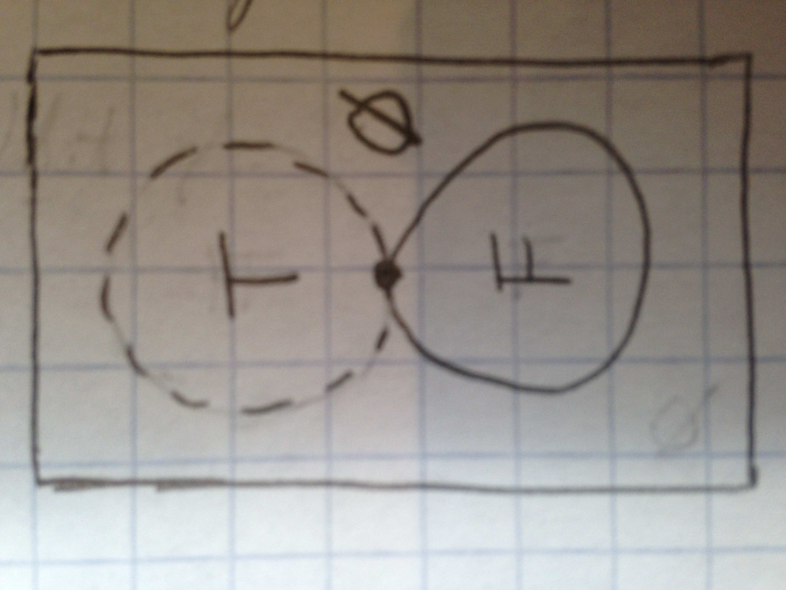

Ternary C
The previous essay argues the functional connectives in C {→, **, ↤} are paired with classical logic rather than intuitionistic logic and how, along with other built-ins {¬, ×, ⊕, ;} they help keep valid program state. The next prior essay had introduced these connectives in terms of boolean logic with the classical truth propositions,
- T ≡ the object exists at the referenced location and follows its type
- F ≡ the object does not exist, does not fit its type, or has zero type information
Part of what makes C so interesting is how False was hacked together. As an experiment, this essay attempts to develop separate symbols to disambiguate the propositions above. I call the result the firth of fourth diagram.

The C Language has two false symbols NULL and void, which share a conceptual meaning that the object referenced does not exist or its type has no information (size = 0). The opposite, true, has no symbol in C but means the object exists at the referenced location and follows its type. For now we will use the symbols {∅, T} to represent falsehood and truth.
There are several use cases of ∅ and implications in C that are debatable from a functional point of view. What is the meaning of a NULL pointer or a vacuous function? Can a function return ∅ and can ∅ be stored?
| a | b | | | ↤ | → | ** | * |
|---|---|---|---|---|---|---|
| T | T | | | T | T | T | T |
| T | ∅ | | | T | ∅ | ∅ | ∅ |
| ∅ | T | | | ∅ | T | T | ∅ |
| ∅ | ∅ | | | ∅ | T | T | ∅ |
The previous essay introduced connectives (×, ⊕, and ;) and two forms of implication in C, stores (↤) and functions (→) but there is another form, pointers (**), which have the semantics that a T pointer references a true object but NULL pointers may or may not indicate a T object. For comparison a reference (*) can never have a false (∅) pointer and always points to a true (T) object.
∅ Pointers
A good example of NULL pointers is dynamic C-strings, which have a pointer to a location in memory containing a sequence of characters which ends at the first occurance of the ∅ character (all 255 other char values are T).

However consider the undefined code below (using ** for pointers and * for references):
Because the NULL character has integer value 0, any length of zeros is equivalent to an empty string with no memory allocated, represented by the ∅ pointer. On the other hand, a wizard type might not consider the ∅ pointer to indicate valid object of that type. Thus these two object types represent the two vacuous cases (a = ∅) for **; i.e. the ** connective does not provide enough information to determine if **wizard he-who-cannot-be-named = NULL; either doesn't exist at all or if his soul lives on at 0. (∅ ** ∅ ≡ ∅ ** T ≡ T).
| a | b | | | → | ** | * |
|---|---|---|---|---|---|
| T | T | | | T | T | T |
| T | ∅ | | | ∅ | ∅ | ∅ |
| ∅ | T | | | T | T | ∅ |
| ∅ | ∅ | | | T | T | ∅ |
(∅ → x) Functions
Next, can useful functions be vacuously true (∅ → T ≡ T)? Recall that operations are functions of the form T × ··· × T → T for some specific type T, but the practical operation time: ∅ → ℤ×ℤ×ℤ does not always return the same value. So we have something that is a useful operation but not a function, despite the fact operations ⊆ functions. There are several more useful examples:
The question posed by this contradiction is actually a specific instance of a more general issue: must all arguments and results be explicit? For example,
In this example, the composed function printf ∘ strcat() is called n times on the same arguments but the output will print 1 + 2 + 3 + ··· + n = n(n + 1)/2 aaaaaa's instead of n aaa's because the variable str is being modified on each iteration.
The example shows that even when all arguments are explicit, a function's stored result can still vary if any arguments live outside the function's stack frame. Again, this goes against the mathematical definition of a function because it returns different results for same arguments. The problem is threefold,
- not all argument and result objects are referenced on the function stack
- arguments living outside the stack may be modified without a visible store
- arguments living outside the stack may be modified by other processes
First, there is little gained in securing (1) unless (2) and (3) are also dealt with, but there are some benefits to fixing all three and thereby making functions referentially transparent.
Second, C has keywords const and volatile to deal with problems (2) and (3), so it is possible to signal that a function is referentially transparent in C. The const keyword is a unfortunately verbose though.
Finally, with regard to the use of the word "function", there is no procedure available in a classic computer that is not deterministic, although there are variable objects in memory and some of these may change outside the current scope of code; so it is not innacurate to use the word "function" or "variable" for these in C, given the link and stack machine model C runs on. C's functional semantics could be improved by introducing linear types as a superset of functions, to annotate referential transparency and help manage the link-loaded function stack—a part of our machine models unlikely to be replaced.
Conventional programming languages are basically high level, complex versions of the von Neumann computer...Although I refer to conventional languages as "von Neumann languages" to take note of their origin and style, I do not, of course, blame the great mathematician for their complexity. In fact, some might say that I bear some responsibility for that problem.
Von Neumann programming languages use variables to imitate the computer's storage cells; control statements elaborate its jump and test instructions; and assignment statements imitate its fetching, storing, and arithmetic. The assignment statement is the von Neumann bottleneck of programming languages and keeps us thinking in word-at-a-time terms in much the same the computer's bottleneck does.
—John Backus, Can Programming Be Liberated from the von Neumann Style? A Functional Style and Its Algebra of Programs. 1997 ACM Turing Award Lecture.
¬ Negation
So far I've defended C's permissiveness around missing function arguments and referential transparency (∅ → T), including malloc(), which returns a pointer (not a reference) by consulting a hidden memory oracle, but even more questionable is its sibling free(), which returns nothing (T → ∅)! This violates the definition of a mathematical function, which cannot map somethings to nothing, and this is reflected in the the logic:
| a | b | | | ↤ | → | ** | * |
|---|---|---|---|---|---|---|
| T | T | | | T | T | T | T |
| T | ∅ | | | T | ∅ | ∅ | ∅ |
| ∅ | T | | | ∅ | T | T | ∅ |
| ∅ | ∅ | | | ∅ | T | T | ∅ |
The purely functional form has a lot to recommend it, because it makes transparent the memory allocation pool being updated.
malloc: Global_Heap × ℕ -> Global_Heap × ℕ*T;
free: Global_heap × ℕ*T -> Global_Heap;
But so does the functionally irreverent, classical C form: it is simpler to read and hides the Global_Heap variable from the namespace/userspace.
malloc: ℕ -> ℕ*T;
free: ℕ*T -> ∅
Why does the classical form compile? Because logical negation (¬p ≡ (p → ∅)) is being used; the type declaration for free suggests that its argument must be false when a statement calling free becomes true. Unfortunately C does not actually use its '!' operator in this context, for example I would prefer free statements be made explicitely true
*Obj obj <-+ malloc(sizeof(obj));
free(obj) -> ∅;
- OR -
!free(obj);
∅ Store
From the prior essay on functional C, the compiler must make every statement made evaluate true, so assuming a store (↤) operation is at the root every statement, then every store must evaluate true.
Going one step further, this implies that the "store to" location must be a reference, not just a pointer i.e. the object being stored too must have memory allocated to it per its type (T). This is automatically true for automatic variables in C but it could be a logic error (∅) to store to a NULL reference (∅ ≡ (a * ∅) ↤ b) , as the logic connectives imply.
| a | b | | | ↤ | → |
|---|---|---|---|---|
| ∅ | ∅ | | | ∅ | T |
| ∅ | T | | | ∅ | T |
| T | ∅ | | | T | ∅ |
| T | T | | | T | T |
However, what does a ↤ ∅ ≡ T mean? The semantics of declaring an automatic variable in C is: a ↤ ∅; a trivially true statement that tells us nothing about the truth of a ∈ A?
Unfortunately many implementations implicitely convert this implicit store ∅ to store 0. Although this ensures variables are automatically true (T), it conflates void and NULL, which semantically separate compile time truth from runtime truth. A more desirable solution would be allowing proof by contradiction, because statements are tautologies.
top
Classical C
- T ≡ the object exists at the referenced location and follows its type
- ∅ ≡ the object does not exist or does not follow its type
It is well established [Wadler, Wikipedia] in intuitionistic logic to not offer not (¬) as a base connective, instead constructing negation from implication and false ¬a ≡ (a → ∅). Further, a purely functional language would not admit a function of type T → ∅ into its type system, so its semantics could have no type negation—and indeed no false types.
But looking again at the propositions for {∅, T} in C, an ∅ object could just mean empty of type information, which proves useful for function composition because void* can be used for generic types. In this way C is more classically functional than purely functional.
Also associated with negative types and results, C is more classically logical than intuitionistically logical because statements are tautologies. The empty function void free(void*) returns to a tautology, free(a); thus we can conclude its argument is false after free.
Classical semantics provide the freedom to let free() imply nothing, aiding the composition of functions at runtime. However there is still some handwaving around the mathematical definition of functions and around tautological statements and the zero middle. Stay tuned.